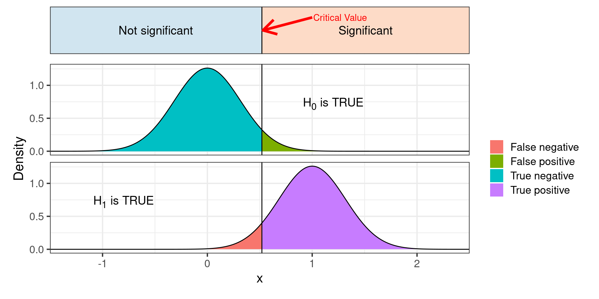
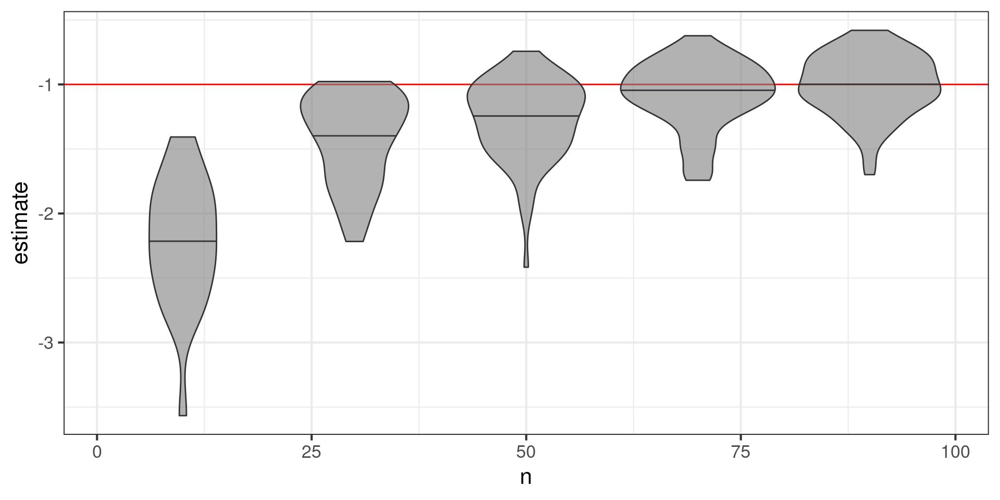
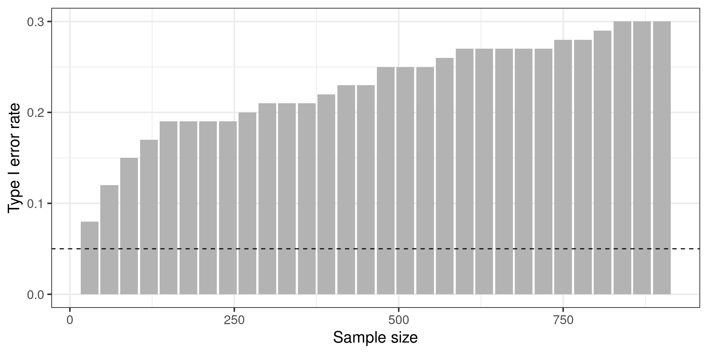

Two-sample t test power calculation
n = 63.76561
d = 0.5
sig.level = 0.05
power = 0.8
alternative = two.sided
NOTE: n is number in *each* groupSample size justification
Richard Telford
March 2025
Sample size justification
Key step in designing study
Advantages of large sample sizes?
Advantages of small sample sizes?
Type of justification
- Measure entire population
- Resource constraints
- Accuracy
- A-priori power analysis
- Heuristics
- No justification
Power
Statistical power is the probability of avoiding a Type II error given that the alternative hypothesis \(H_1\) is true.
Remember
- Type I error = false positive, rejecting \(H_0\) when it is true
- Type II error = false negative, not rejecting \(H_0\) when it is false
The need for power
With little power:
- May not be able to reject \(H_0\) when it is false
- Exaggerate effect size
Lots of power
- Probably can reject \(H_0\) when it is false
- More precise estimates of effect size
- More expensive
Need to do power analysis before experiment.
Components of a power analysis
- Effect size
- Type I error rate (significance level - conventionally set to 0.05)
- Type II error rate (conventionally aim for 0.8)
- Number of observations
Can solve for any of these
Typically want to know how many observations needed.
One sided Z-test
Analytic power analysis
Some power tests in base R.
power.t.testpower.anova.testpower.prop.test
More in pwr package
Power t test
Effect size is Cohen’s d \(d = \frac{\mu_1 - \mu_2}{\sigma}\)

Power analysis by simulation
Analytical power analysis becomes complex with more complex statistics
- Complex experimental design
- Autocorrelation
- Confounding variables
- Non-normal distributions
- Violation of assumptions of models
Simulation always possible
Simulation lets us ask more interesting questions:
Expected uncertainty
Apparent effect size
Biases
Arnold et al. (2011) Simulation methods to estimate design power:an overview for applied research. BMC Medical Research Methodology
General approach
- Simulate your data generating process
- Run statistical test on simulated data
- Repeat many times
- Proportion of runs with significant result is the power.
Trading computer time (cheap) for statistician time (expensive)
Simulating a t-test
# data info
n <- 30 #number observations in each group
delta <- 1 # difference between means
sd <- 2 # standard deviation
# simulate means
mu <- rep(c(0, delta), each = n)
# add noise
y <- mu + rnorm(length(mu), sd = sd)
# predictor
x <- factor(rep(c("A", "B"), each = n))
# run test
test <- t.test(y ~ x)
Welch Two Sample t-test
data: y by x
t = 0.28387, df = 54.841, p-value = 0.7776
alternative hypothesis: true difference in means between group A and group B is not equal to 0
95 percent confidence interval:
-0.9678095 1.2872071
sample estimates:
mean in group A mean in group B
0.6829540 0.5232552 # A tibble: 1 × 10
estimate estimate1 estimate2 statistic p.value parameter conf.low conf.high
<dbl> <dbl> <dbl> <dbl> <dbl> <dbl> <dbl> <dbl>
1 0.160 0.683 0.523 0.284 0.778 54.8 -0.968 1.29
# ℹ 2 more variables: method <chr>, alternative <chr>Make a function
sim_t_test <- function(n, delta, sd, ...){
# simulate means
mu <- rep(c(0, delta), each = n)
# add noise
y <- mu + rnorm(length(mu), sd = sd)
# predictor
x <- factor(rep(c("A", "B"), each = n))
# run test
test <- t.test(y ~ x)
broom::glance(test) |> mutate(n = n, delta = delta, sd = sd)
}
sim_t_test(n = 30, delta = 1, sd = 2)# A tibble: 1 × 13
estimate estimate1 estimate2 statistic p.value parameter conf.low conf.high
<dbl> <dbl> <dbl> <dbl> <dbl> <dbl> <dbl> <dbl>
1 -0.666 0.0413 0.707 -1.36 0.180 58.0 -1.65 0.316
# ℹ 5 more variables: method <chr>, alternative <chr>, n <dbl>, delta <dbl>,
# sd <dbl>Repeating functions many times
Very common problem
Import many similar datasets
Run analyses on multiple datasets
Make many plots
Many solutions in R
for loops
Base R apply family
purrr/furrr packages
for loops
Common in other languages
Useful when one iteration depends on previous
Good practice to create output object in advance.
Can be very slow if output object grows repeatedly
The apply family
applyiterates over the rows/columns of a data.frame/matrixlapplyiterates over a list/data.frame and returns a listsapplysame aslapplybut simplifies to a vector
Generally better to use purrr for consistent behaviour.
purrr package
mapiterates over a vector/list and returns a list
map2andpmapfor iterating over multiple inputsmap_chr/map_dbletc simplify list to a vectorpipe to
list_rbind()to combine data.frames
furrr package: parallel purrr
For speed with slow jobs.
Rerunning simulation many times
Magnitude of Effect given significance
Help for simulating data
faux package
Fixed sample size?
Experiment is run in batches.
Can we stop sampling when we get a significant result?
But see futility stopping in clinical trials.
Summary
Power test should be done before experimental work to determine sample size
Analytical and simulation approaches are possible
Key challenge is estimating effect size
- existing estimates are likely biased
- minimum interesting effect size